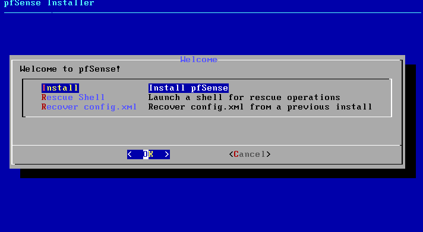
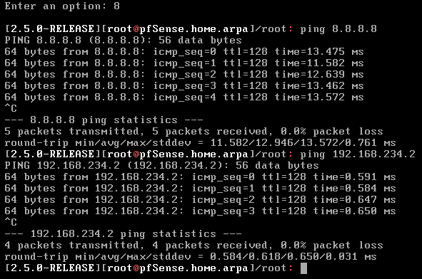

Lab design
Setting up a lab has many advantages and benefits when it comes to do some researches and testing. Being able to virtualize any machine is a big opportunity, you can create many systems without spending a lot of money. You can monitore and control your infrastructure as if you were in a small company. Testing things and doing researches are always better to do it in a development environment than in production. Therefore as a cybersecurity engineer or software engineer or network engineer, it is always good to have a lab to do some testings.
Here is the lab we are going to create, it will be the foundation and others systems can be added later to create a more advanced lab :
1/ Firewall
Let's install our first virtual machine, which will be used as the firewall. Let's install pfSense, a free and open source firewall to control the traffic of our network. Any company must use a firewall to monitor the inbound and outbound network traffic.Download pfSense on this link, remember to always check the link before downloading a file: https://www.pfsense.org/download
Or if you want to download with a command line, wget or curl can always help you out.
- CPU: 1 virtual core is enough
- Memory: Between 512Mb to 1Gb is good, to get better performance, I suggest to put 1Gb of memory
- Hard Disk: 8Gb to 20Gb, it doesn't need a lot of storage
In the network settings, we are going to add one network adapter. Our firewall needs to have 2 network adapter because it need to get 2 ip addresses. One ip addresses for your "Home network" and a ip address for the private virtual network protected by the firewall. This is also where will be located the others systems.
Once the configuration is done, it's time to install pfSense. Make sure to boot with the .iso file, otherwise the installation will not start.  Then follow the instructions. Once it is done, make sure to have 2 network adapters so 2 ip addresses on the menu of pfSense. To be sure that the network interfaces are correctly configured, check your networking settings on VMware and find the MAC address of each network adapter. Once you retrieve the MAC address of each network interface, go to pfSense and assign the interface to the correct network. Assigning the interface, you will see the MAC address of each interface and you can compare it with the one you retrieved from the VMware network settings. Once you have set up the correct interface for the WAN and LAN then you should be able to ping your own system. If you have set up the WAN network interface of your pfSense as NAT, you can check the NAT gateway in the advanced network settings in VMWare. Click on Edit -> Virtual Network Editor to access to the advanced network settings. After configuring the interfaces, make sure you can ping the NAT gateway, and internet to check if everything works well. 
2/ Active Directory
In this lab, the operating system for the active directory is Windows Server 2012 R2. For every system located in the After installing the Windows Server, we need to install some windows features and roles for Active Directory.First let's use a static ip address for the server. An Active Directory is acting like a DNS server, and many systems must communicate with the DNS server to join the domain or to request any DNS query. Once setting up the static ip address, and specify the default gateway ip address as the pfSense ip address, check your connection. You should be able to ping the firewall and also ping google.com. If this is not the case, please check the firewall rules by connecting to the web interface of pfSense. First role and feature to add will be the DNS server, Active Directory works with DNS. To add a feature, get on the dashboard and click on "Add role and features".
 Then select your server, and click on DNS server for the role you want to add to the Windows server. About the features, we can let it by default on this installation.
Once the DNS server is installed, you can proceed to install the Active Directory Domain Services.
After the installation, promote the server as a domain controller and you're done with the installation of the Active Directory.
Then select your server, and click on DNS server for the role you want to add to the Windows server. About the features, we can let it by default on this installation.
Once the DNS server is installed, you can proceed to install the Active Directory Domain Services.
After the installation, promote the server as a domain controller and you're done with the installation of the Active Directory. 3/ Windows 10
This part will show you how to join a windows system in the Active Directory. There is nothing complicated in the process but there are key points to be aware:- Make sure that the system is correctly pointing to the DC in the DNS server settings
- You must have a domain account that is part of the domain admin group to join the system